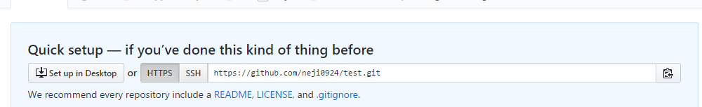

MAC安裝我是找網路資源
可能有些問題
不過我相信你可以的
$ brew install git
沒有brew的話要先安裝
$ git --version
$ git config --global user.name "Neji"
$ git config --global user.email "neji0924@gmail.com"
終於要開始了
這是github提供的一個架站位置
他只讀取 [帳號].github.io 這個rep
其他名稱的話只會是一般的rep
你可以在這專案下各種開目錄
首先是 cd 到你的資料夾裡面
$ echo "# My Proj" >> README.md
md檔是一個叫markdown的語言
為了快速寫文檔而產生的 類似html
先跳過他
如果再github上建立專案有順便建立README這步驟就跳過
$ git init
$ git add .
$ git status
$ git commit -m "訊息"
init 就是這個專案加入git
add . 把你要推出去的檔案add起來 (. 就是全部)
add . 可能會有錯誤訊息就再打一次
使用status查看 綠色的就是已經被加入要推出去的地方
commit 就是存檔的意思
$ git remote add origin [url]
$ git push origin master
url在這看
第一次上傳可能要等一下才有
他會讀取index.html所以記得要有這隻檔案
想更改網址可以購買網域
在專案目錄下加入CNAME 這隻檔案
在專案目錄下加入CNAME 這隻檔案
想更改網址可以購買網域
在專案目錄下加入CNAME 這隻檔案
把網域貼進去就可以了
不用副檔名
記得上傳上去
$ git status
$ git add .
$ git status
$ git commit -m "訊息"
$ git push origin master
status 可以查看那些檔案有改動(紅色)
add 檔案後 再用status看(綠色)
$ git clone [url]
到新的電腦要下載專案的話
$ git pull
曾經下載過 但不是最新版本的話就要更新
例如在公司上傳了 回到家要記得先pull
很重要!!!!